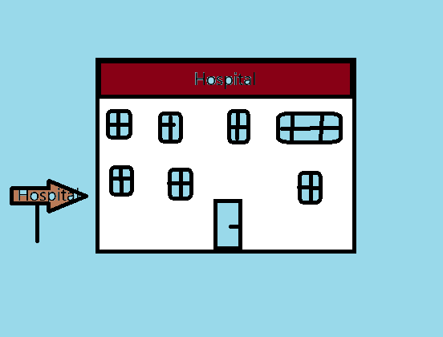

Welcome to Our Medical Centre
At our Medical Centre, we claim to provide a comprehensive range of services designed to cater to your health needs—albeit with a side of managed expectations.
From our General Practitioners (GPs), who rush through consultations, to allied health services like physiotherapy that rely heavily on stretches and optimism, we're here to keep you semi-functional.
Our “dedication” is reflected in our skilled yet overworked staff, decent equipment, and a waiting room atmosphere reminiscent of a DMV. Whether you need a check-up or dental work that costs a small fortune, we'll get you just enough care to keep coming back.